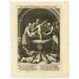

<!DOCTYPE html>
<html lang="en">
 <head>
<!-- Favicon -->
<link rel="shortcut icon" href="../../favicon.ico">
  <meta charset="utf-8"/>
  <title>
   A lot of people are reacting to this meme, here is the source if you are interested:
  </title>
  <meta content="Post on /v/Conspiracy from 2020-01-21 by TheRyanOKeoganShow." name="description"/>
  <meta content="A lot of people are reacting to this meme, here is the source if you are interested:" property="og:title"/>
  <meta content="Post on /v/Conspiracy from 2020-01-21 by TheRyanOKeoganShow." property="og:description"/>
  <link href="../../static/css/page.css" rel="stylesheet"/>
  <meta content="https://voat.conspiracy.hackliberty.org/thumbnails/68/15/6815f18a-4c3d-4ac6-9018-9b6ddf9cfcc4.png" property="og:image"/>
  <meta content="https://voat.conspiracy.hackliberty.org/v/conspiracy/3619554.html" property="og:url"/>
  <meta content="width=device-width, initial-scale=1" name="viewport"/>
  <link href="https://voat.conspiracy.hackliberty.org/v/conspiracy/3619554.html" rel="canonical"/>
  <meta content="article" property="og:type"/>
  <meta content="Voat /v/Conspiracy Archive" property="og:site_name"/>
  <meta content="en_US" property="og:locale"/>
  <meta content="summary_large_image" name="twitter:card"/>
  <meta content="A lot of people are reacting to this meme, here is the source if you are interested:" name="twitter:title"/>
  <meta content="Post on /v/Conspiracy from 2020-01-21 by TheRyanOKeoganShow." name="twitter:description"/>
  <meta content="https://voat.conspiracy.hackliberty.org/thumbnails/68/15/6815f18a-4c3d-4ac6-9018-9b6ddf9cfcc4.png" name="twitter:image"/>
 </head>
</html>
<body class="dark">
 <header>
  <nav class="navbar navbar-dark bg-primary">
    <a class="navbar-brand" href="../../index.html">/v/Conspiracy Archive</a>
    <div class="navbar-collapse">
      <ul class="navbar-nav">
        <li class="nav-item">
          <a class="nav-link" href="../../date/page-1.html">Date</a>
        </li>
        <li class="nav-item">
          <a class="nav-link" href="../../comments/page-1.html">Comments</a>
        </li>
        <li class="nav-item">
          <a class="nav-link" href="../../search.html">Search</a>
        </li>
        <li class="nav-item dropdown">
          <a class="nav-link dropdown-toggle" href="#" id="navbarDropdown" role="button" 
             data-toggle="dropdown" aria-haspopup="true" aria-expanded="false">
            subreddits
          </a>
          <div class="dropdown-menu" aria-labelledby="navbarDropdown">
            <a class="dropdown-item" href="https://reddit.conspiracy.hackliberty.org">r/conspiracy</a>
            <a class="dropdown-item" href="https://reddit.pizzagate.hackliberty.org">r/pizzagate</a>
            <a class="dropdown-item" href="https://voat.conspiracy.hackliberty.org">v/conspiracy</a>
            <a class="dropdown-item" href="https://voat.pizzagate.hackliberty.org">v/pizzagate</a>
          </div>
        </li>
      </ul>
    </div>
  </nav>
</header>

 <div id="container">
  <!-- array (
  'submissionid' => 3619554,
  'creationDate' => '2020-01-21 23:16:39',
  'domain' => 'lbi.org',
  'formattedContent' => NULL,
  'isAdult' => 0,
  'isAnonymized' => 0,
  'subverse' => 'Conspiracy',
  'thumbnail' => '6815f18a-4c3d-4ac6-9018-9b6ddf9cfcc4.png',
  'title' => 'A lot of people are reacting to this meme, here is the source if you are interested:',
  'url' => 'https://www.lbi.org/artcatalog/record/1497763',
  'userName' => 'TheRyanOKeoganShow',
  'archivedLink' => NULL,
  'archivedDomain' => NULL,
  'isDeleted' => 0,
) --><div class="content" role="main">
   <div class="sitetable linklisting" id="siteTable">
    <div class="submission id-3619554 link type-text" id="submission-3619554">
     <a name="submissionTop">
     </a>
     <p class="parent">
     </p>
     <a class="thumbnail may-blank" href="https://www.lbi.org/artcatalog/record/1497763" target="_self">
      
     </a>
     <div class="entry unvoted">
      <p class="title">
       <a class="title may-blank" href="https://www.lbi.org/artcatalog/record/1497763" tabindex="1" target="_self" title="A lot of people are reacting to this meme, here is the source if you are interested:">
        A lot of people are reacting to this meme, here is the source if you are interested:
       </a>
       <span class="domain">
        (
        <a href="https://archive.searchvoat.co/search.php?d=lbi.org">
         lbi.org
        </a>
        )
       </span>
      </p>
      <p class="tagline">
       submitted
       <time datetime="2020-01-21T23:16:39+00:00" title="01/21/2020 11:16:39 PM">
        2020-01-21T23:16
       </time>
       by
       <span class="userattrs">
        <a class="author may-blank" href="https://archive.searchvoat.co/search.php?u=TheRyanOKeoganShow">
         TheRyanOKeoganShow
        </a>
       </span>
      </p>
      <ul class="flat-list buttons">
       <li class="first">
        <a class="comments may-blank" href="https://archive.searchvoat.co/v/Conspiracy/3619554" rel="nofollow">
         3 comments
        </a>
       </li>
      </ul>
     </div>
     <div class="child">
     </div>
     <div class="clearleft">
     </div>
    </div>
    <div class="clearleft">
    </div>
   </div>
   <div class="horizontal-line">
   </div>
   <div class="commentarea">
    <div class="sitetable nestedlisting" id="siteTable">
     <div class="child id-22239835 comment even" style="">
      <div class="entry unvoted">
       <div class="noncollapsed" id="22239835" style=";">
        <p class="tagline">
         <a class="author may-blank" href="https://archive.searchvoat.co/search.php?u=RV911">
          RV911
         </a>
         <span class="userattrs">
         </span>
         <time datetime="2020-01-24T13:55:17+00:00" title="1/24/2020 1:55:17 PM">
          2020-01-24T13:55
         </time>
        </p>
        <div class="usertext-body may-blank-within" id="commentContent-22239835">
         <div class="md">
          <p>
           <p>
            "Jews were often falsely accused of secretely killing Christians as a form of ritual murder by anti-Semites. This anti-Semitic accusation is commonly called blood accusation or blood libel, because anti-Semites believed that Christian blood was used in Jewish religous rituals."
           </p>
           <p>
            This entire blurb makes no sense. And the typos are telling another story.
           </p>
          </p>
         </div>
        </div>
        <ul class="flat-list buttons">
         <li class="first">
          <a class="bylink" href="https://archive.searchvoat.co/v/Conspiracy/3619554/22239835" rel="nofollow">
           link
          </a>
         </li>
        </ul>
       </div>
      </div>
      <div class="child id-22246455 comment odd" style="">
       <div class="entry unvoted">
        <div class="noncollapsed" id="22246455" style=";">
         <p class="tagline">
          <a class="author may-blank" href="https://archive.searchvoat.co/search.php?u=TheRyanOKeoganShow">
           TheRyanOKeoganShow
          </a>
          <span class="userattrs">
          </span>
          <time datetime="2020-01-24T22:49:04+00:00" title="1/24/2020 10:49:04 PM">
           2020-01-24T22:49
          </time>
         </p>
         <div class="usertext-body may-blank-within" id="commentContent-22246455">
          <div class="md">
           <p>
            <p>
             Fascinating analysis. Although I don't know if it is obvious any of the children are female. What would the relevance be if they were female? Here is another pic lbi dot org  artcatalog slash record slash 1497760
            </p>
           </p>
          </div>
         </div>
         <ul class="flat-list buttons">
          <li class="first">
           <a class="bylink" href="https://archive.searchvoat.co/v/Conspiracy/3619554/22246455" rel="nofollow">
            link
           </a>
          </li>
         </ul>
        </div>
       </div>
       <div class="child id-22316668 comment even" style="">
        <div class="entry unvoted">
         <div class="noncollapsed" id="22316668" style=";">
          <p class="tagline">
           <a class="author may-blank" href="https://archive.searchvoat.co/search.php?u=RV911">
            RV911
           </a>
           <span class="userattrs">
           </span>
           <time datetime="2020-01-30T18:06:23+00:00" title="1/30/2020 6:06:23 PM">
            2020-01-30T18:06
           </time>
          </p>
          <div class="usertext-body may-blank-within" id="commentContent-22316668">
           <div class="md">
            <p>
             <p>
              the needled prongs on the fingers of the two figures on the left of the "small person" are real. they have been retrieved in ancient dig-sites, and are in use still, in some countries as a form of "jewelry."
             </p>
             <p>
              this image does reveal a common visual among all participants
              <a href="https://sheldonkirshner.com/wp-content/uploads/2016/04/Medieval-woodcut-of-blood-libel-e1459966577934.jpg">
               https://sheldonkirshner.com/wp-content/uploads/2016/04/Medieval-woodcut-of-blood-libel-e1459966577934.jpg
              </a>
             </p>
             <p>
              at best, we may be looking at what is referred to as the "doctors of the church" for lack of a better phrase. little people were in more abundance then as well. young people who exhibited esp, telepathy, or "supra-natural" abilities were hunted and studied. no differently than the stories of Michelangelo studying human corpses for anatomy lessons.
             </p>
            </p>
           </div>
          </div>
          <ul class="flat-list buttons">
           <li class="first">
            <a class="bylink" href="https://archive.searchvoat.co/v/Conspiracy/3619554/22316668" rel="nofollow">
             link
            </a>
           </li>
          </ul>
         </div>
        </div>
       </div>
      </div>
     </div>
    </div>
   </div>
  </div>
 </div>
<!-- Footer Section -->
<footer class="container-fluid mt-3">
  <p class="small mb-0">
    /v/conspiracy archive has 42504 posts and 159856 total comments.
    <a href="https://git.hackliberty.org/c0mmando/voat-conspiracy-archive/">source code</a>.
  </p>
</footer>

<script src="../../static/js/jquery-3.7.1.slim.min.js"></script>
<script src="../../static/js/comments-toggle.js"></script>

</body>
